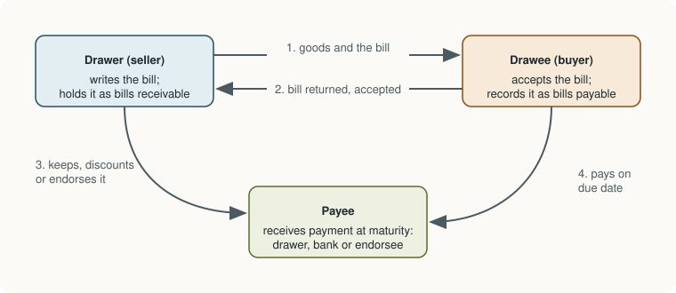

Chapter 5: Bank Reconciliation and Bills of Exchange¶
Agreeing the cash book with the bank, and accounting for written promises to pay
Learning outcomes
After studying this chapter you should be able to:
- Explain why the bank balance in the cash book differs from the balance in the bank statement.
- Prepare a bank reconciliation statement, starting from either balance, for a favourable balance and for an overdraft.
- Prepare an adjusted cash book and reconcile it with the bank statement.
- Define a bill of exchange and a promissory note and name their parties.
- Calculate the due date of a bill, including days of grace.
- Journalise the main transactions in bills in the books of the drawer and the drawee: retaining, discounting, endorsing and dishonour.
5.1 Two records of the same account¶
A business that keeps money in a bank has two records of that money. The business keeps one, in the bank column of its cash book (Chapter 4). The bank keeps the other, in its own books, and sends the customer a copy as a bank statement (traditionally a pass book). Both record the same deposits and the same cheques, so one might expect their balances to agree. On any given date they usually do not.
There is also a reversal of sides to keep in mind. In the business's cash book, money in the bank is an asset: a debit balance. In the bank's books, the same money is owed by the bank to the customer, a liability of the bank: a credit balance. So a favourable balance appears as a debit in the cash book and as a credit in the bank statement. An overdraft, when the business has withdrawn more than it deposited, appears as a credit in the cash book and a debit in the bank statement.
A bank reconciliation statement is a statement prepared on a date to explain the difference between the two balances, item by item, so that both records are shown to be correct (or the errors are found).
5.2 Causes of the difference¶
The causes fall into three groups.
Timing differences, where both records will agree in time:
- Cheques issued but not yet presented for payment. The business credits its cash book when it issues the cheque. The bank pays it only when the payee presents it, which may be days later.
- Cheques deposited but not yet credited (not yet cleared). The business debits its cash book when it deposits a cheque. The bank credits the account only when the cheque has been collected from the other bank.
Items recorded by the bank but not yet known to the business:
- Bank charges and fees debited by the bank.
- Interest credited on a deposit, or debited on an overdraft or loan.
- Direct deposits by customers into the business's account, and amounts collected by the bank on the business's behalf (dividends, interest on investments).
- Payments made by the bank under standing instructions, such as insurance premiums, loan instalments or utility bills.
- Cheques deposited and dishonoured, which the bank reverses.
Errors, either in the cash book (a wrong amount, a receipt entered as a payment) or by the bank.
Key idea
Timing differences need no entry in the books: they will disappear on their own. Items the bank has recorded that the business has not yet recorded must be entered in the cash book, because they are real transactions of the business.
5.3 Preparing a bank reconciliation statement¶
Start with one balance and adjust it, item by item, to arrive at the other. For each item ask: has this item made the balance I am starting from larger or smaller than the balance I am working towards? If it has made the starting balance smaller, add it back; if larger, deduct it.
Starting from a favourable (debit) balance in the cash book and working towards the balance in the bank statement:
| Item | Effect on the bank statement balance compared with the cash book | Adjustment |
|---|---|---|
| Cheques issued but not yet presented | Bank balance is higher (bank has not yet paid) | Add |
| Cheques deposited but not yet credited | Bank balance is lower (bank has not yet credited) | Deduct |
| Bank charges debited by the bank | Bank balance is lower | Deduct |
| Interest credited by the bank | Bank balance is higher | Add |
| Direct deposits and collections by the bank | Bank balance is higher | Add |
| Payments by the bank under standing instructions | Bank balance is lower | Deduct |
| Cheque deposited and dishonoured | Bank balance is lower | Deduct |
Table 5.1. Adjustments when starting from a favourable cash book balance.
When the starting point is the bank statement instead, every adjustment is reversed. When the balance is an overdraft, think in terms of the overdraft: an item that makes the bank's overdraft larger than the cash book's is added to the cash book overdraft, and so on. The worked examples show each case.
Example 5.1 Reconciliation starting from the cash book
On 31 March 2026 the bank column of the cash book of Nair Enterprises showed a debit balance of ₹48,500. Comparing the cash book with the bank statement revealed:
(a) Cheques of ₹12,400 issued to suppliers had not yet been presented for payment.
(b) Cheques of ₹9,600 deposited on 30 and 31 March had not yet been credited by the bank.
(c) Bank charges of ₹350 had been debited by the bank.
(d) Interest of ₹1,200 had been credited by the bank.
(e) A customer had deposited ₹5,000 directly into the business's account.
(f) The bank had paid an insurance premium of ₹3,600 under a standing instruction.
(g) A cheque of ₹2,000 from a customer, deposited in March, had been dishonoured; the bank statement showed the reversal but the cash book did not.
Bank Reconciliation Statement of Nair Enterprises as at 31 March 2026
| Particulars | ₹ | ₹ |
|---|---|---|
| Balance as per cash book (debit) | 48,500 | |
| Add: (a) Cheques issued but not yet presented | 12,400 | |
| (d) Interest credited by the bank | 1,200 | |
| (e) Direct deposit by a customer | 5,000 | 18,600 |
| 67,100 | ||
| Less: (b) Cheques deposited but not yet credited | 9,600 | |
| (c) Bank charges | 350 | |
| (f) Insurance premium paid by the bank | 3,600 | |
| (g) Cheque dishonoured | 2,000 | 15,550 |
| Balance as per bank statement (credit) | 51,550 |
Check: 48,500 + 18,600 − 15,550 = 51,550.
5.4 The adjusted cash book¶
In practice, a careful accountant first brings the cash book up to date by recording the items that the bank has entered and the business has not: charges, interest, direct deposits, standing-instruction payments, dishonoured cheques and any errors in the cash book. The corrected balance is the true bank balance of the business, and it is this figure that goes into the balance sheet. The reconciliation statement that follows then contains only the timing differences (and any bank errors).
Example 5.2 Adjusted cash book and reconciliation (same data)
Adjusted Cash Book (bank column) as at 31 March 2026
| Particulars | ₹ | Particulars | ₹ |
|---|---|---|---|
| To Balance b/d (unadjusted) | 48,500 | By Bank charges A/c | 350 |
| To Interest A/c | 1,200 | By Insurance A/c | 3,600 |
| To Customer (direct deposit) | 5,000 | By Customer (cheque dishonoured) | 2,000 |
| By Balance c/d (adjusted) | 48,750 | ||
| Total | 54,700 | Total | 54,700 |
Bank Reconciliation Statement as at 31 March 2026
| Particulars | ₹ |
|---|---|
| Balance as per adjusted cash book | 48,750 |
| Add: Cheques issued but not yet presented | 12,400 |
| 61,150 | |
| Less: Cheques deposited but not yet credited | 9,600 |
| Balance as per bank statement | 51,550 |
Both methods arrive at ₹51,550. The balance sheet shows the bank balance at ₹48,750, the adjusted cash book figure, because the uncleared cheques and unpresented cheques are the business's own transactions, correctly recorded.
Caution
Do not show the bank statement balance in the balance sheet. It is the bank's record, which lags behind the business's own record by the timing differences. The figure for the balance sheet is the adjusted cash book balance.
5.5 Reconciling an overdraft¶
When the business has an overdraft, the cash book shows a credit balance and the bank statement a debit balance. Work with the overdraft as a positive amount and ask, for each item, whether it makes the bank's overdraft larger or smaller than the cash book's.
Example 5.3 Reconciliation of an overdraft
On 31 March 2026 the cash book of Pillai & Co showed an overdraft of ₹25,000. On examination:
(a) Cheques of ₹6,000 issued had not been presented.
(b) Cheques of ₹4,500 deposited had not been credited.
(c) The bank had charged interest on the overdraft of ₹800.
(d) The bank had collected a dividend of ₹1,500 on the firm's behalf.
| Particulars | ₹ | ₹ |
|---|---|---|
| Overdraft as per cash book | 25,000 | |
| Add: (b) Cheques deposited but not credited (bank overdraft is larger) | 4,500 | |
| (c) Interest on overdraft charged by the bank | 800 | 5,300 |
| 30,300 | ||
| Less: (a) Cheques issued but not presented (bank has not yet paid them) | 6,000 | |
| (d) Dividend collected by the bank | 1,500 | 7,500 |
| Overdraft as per bank statement | 22,800 |
Reasoning: the bank has not yet paid the cheques issued, so its overdraft is smaller by ₹6,000; it has not yet credited the cheques deposited, so its overdraft is larger by ₹4,500; interest charged increases the overdraft; the dividend collected reduces it. 25,000 + 5,300 − 7,500 = ₹22,800.
Starting from the bank statement¶
A reconciliation can equally begin with the bank statement balance and arrive at the cash book balance; each adjustment is simply reversed. Starting from the bank statement balance of ₹51,550 in Example 5.1, one would deduct the unpresented cheques (12,400), interest (1,200) and direct deposit (5,000), and add the uncleared cheques (9,600), charges (350), insurance (3,600) and dishonoured cheque (2,000): 51,550 − 18,600 + 15,550 = ₹48,500, the cash book balance.
5.6 Bills of exchange and promissory notes¶
When goods are sold on credit, the seller relies on the buyer's word to pay. A bill of exchange turns that word into a written document that can be enforced in law and that the seller can use before the due date to raise money.
In India, bills of exchange, promissory notes and cheques are negotiable instruments governed by the Negotiable Instruments Act, 1881. In general terms:
- A bill of exchange is an instrument in writing containing an unconditional order, signed by the maker, directing a certain person to pay a certain sum of money only to, or to the order of, a certain person or to the bearer of the instrument.
- A promissory note is an instrument in writing containing an unconditional undertaking, signed by the maker, to pay a certain sum of money only to, or to the order of, a certain person or to the bearer of the instrument.
- A cheque is a bill of exchange drawn on a specified banker and payable on demand.
The essential difference is that a bill contains an order (the seller orders the buyer to pay), while a promissory note contains a promise (the buyer promises to pay). A bill must be accepted by the person on whom it is drawn before it binds him; a note binds its maker from the start.
The parties to a bill¶
- The drawer is the person who writes (draws) the bill: usually the seller or creditor.
- The drawee is the person on whom the bill is drawn and who is ordered to pay: usually the buyer or debtor. Once he has signed his acceptance on it, he is called the acceptor.
- The payee is the person to whom the money is to be paid: the drawer himself, or a person to whom the drawer has passed the bill (an endorsee), or a bank that has discounted it.

In the drawer's books an accepted bill is an asset called Bills Receivable (B/R); in the drawee's books it is a liability called Bills Payable (B/P).
5.7 Term and due date¶
A bill may be payable on demand (at sight) or after a stated period (a time bill), such as "three months after date" or "sixty days after sight". The period is the term of the bill.
For a time bill, the law adds three days of grace to the end of the term. The date of maturity (due date) is the date on which the term ends plus three days. The main rules for counting are:
- A term stated in months ends on the same date of the month in which it ends. If that month has no such date, the term ends on the last day of that month.
- A term stated in days excludes the date of the bill and counts the following days.
- If the date of maturity is a public holiday, the bill falls due on the preceding business day.
Example 5.4 Calculating due dates
| Bill | Term ends | Add 3 days of grace | Date of maturity |
|---|---|---|---|
| Dated 1 January 2026, at three months after date | 1 April 2026 | +3 days | 4 April 2026 |
| Dated 10 March 2026, at 60 days after date | 9 May 2026 | +3 days | 12 May 2026 |
| Dated 31 January 2026, at one month after date | 28 February 2026 (no 31 February) | +3 days | 3 March 2026 |
| Dated 15 August 2025, at two months after date | 15 October 2025 | +3 days | 18 October 2025 |
For the 60-day bill: March has 31 days, so 21 days remain after 10 March (11 to 31 March); April adds 30 days (total 51); 9 more days in May make 60, so the term ends on 9 May.
5.8 What the holder can do with a bill¶
Once a bill has been accepted, its holder (the drawer, to begin with) has four choices:
- Retain it till maturity and present it to the drawee for payment on the due date.
- Discount it with a bank: hand it to the bank before maturity and receive the amount of the bill less a charge called discount, which is interest for the unexpired period. The bank then collects from the drawee.
- Endorse it to a creditor in settlement of a debt, by signing it over. The creditor (endorsee) collects from the drawee.
- Send it to the bank for collection: the bank holds it and collects the amount on the due date for a small fee.
If the drawee fails to pay on the due date, the bill is dishonoured. The holder usually has the dishonour formally recorded by a notary public, who charges a fee called noting charges; this provides legal evidence of dishonour. Whoever holds the bill at that time pays the noting charges and recovers them, along with the amount of the bill, from the person who passed the bill to him, and ultimately from the drawee. On dishonour, the drawee's debt to the drawer revives as an ordinary debt.
5.9 Journal entries for bills¶
The entries follow the ordinary rules of debit and credit. Bills Receivable is an asset; Bills Payable is a liability.
Example 5.5 Bill discounted and later dishonoured
On 1 January 2026 Anil sold goods for ₹20,000 to Bharat and drew on him a bill at three months, which Bharat accepted. On 4 January Anil discounted the bill with his bank at 12% per annum, the bank charging discount for three months. On the due date the bill was dishonoured, and the bank paid noting charges of ₹100.
Discount = 20,000 × 12/100 × 3/12 = ₹600. Due date: 4 April 2026.
Journal of Anil (drawer)
| Date 2026 | Particulars | Dr (₹) | Cr (₹) |
|---|---|---|---|
| Jan 1 | Bharat ... Dr | 20,000 | |
| To Sales A/c | 20,000 | ||
| (Being goods sold on credit) | |||
| Jan 1 | Bills Receivable A/c ... Dr | 20,000 | |
| To Bharat | 20,000 | ||
| (Being Bharat's acceptance received for three months) | |||
| Jan 4 | Bank A/c ... Dr | 19,400 | |
| Discount on Bills A/c ... Dr | 600 | ||
| To Bills Receivable A/c | 20,000 | ||
| (Being the bill discounted at 12% p.a.) | |||
| Apr 4 | Bharat ... Dr | 20,100 | |
| To Bank A/c | 20,100 | ||
| (Being the discounted bill dishonoured; bank paid noting charges ₹100) |
Journal of Bharat (drawee)
| Date 2026 | Particulars | Dr (₹) | Cr (₹) |
|---|---|---|---|
| Jan 1 | Purchases A/c ... Dr | 20,000 | |
| To Anil | 20,000 | ||
| (Being goods bought on credit) | |||
| Jan 1 | Anil ... Dr | 20,000 | |
| To Bills Payable A/c | 20,000 | ||
| (Being acceptance given to Anil) | |||
| Apr 4 | Bills Payable A/c ... Dr | 20,000 | |
| Noting Charges A/c ... Dr | 100 | ||
| To Anil | 20,100 | ||
| (Being our acceptance dishonoured and noting charges payable) |
After the dishonour, Bharat again owes Anil ₹20,100 as an ordinary debt, and Anil has repaid the bank. The discount of ₹600 remains Anil's expense. Bharat does not record the discounting at all: it is a matter between Anil and his bank.
The entries for the other choices, for the same bill of ₹20,000, are summarised below.
| Event | Drawer's books | Drawee's books |
|---|---|---|
| Bill retained and honoured at maturity | Bank Dr 20,000; To Bills Receivable 20,000 | Bills Payable Dr 20,000; To Bank 20,000 |
| Bill endorsed to Chetan, a creditor of the drawer | Chetan Dr 20,000; To Bills Receivable 20,000 | No entry |
| Endorsed bill honoured | No entry | Bills Payable Dr 20,000; To Bank 20,000 |
| Endorsed bill dishonoured, noting ₹100 paid by Chetan | Drawee Dr 20,100; To Chetan 20,100 | Bills Payable Dr 20,000; Noting Charges Dr 100; To Drawer 20,100 |
| Retained bill dishonoured, noting ₹100 paid by drawer | Drawee Dr 20,100; To Bills Receivable 20,000; To Bank 100 | Bills Payable Dr 20,000; Noting Charges Dr 100; To Drawer 20,100 |
| Bill sent to bank for collection | Bills Sent for Collection Dr 20,000; To Bills Receivable 20,000; on collection, Bank Dr; To Bills Sent for Collection | No entry until payment, then as for honour |
Table 5.2. Entries for the main events in the life of a bill of ₹20,000.
Note
Bills of exchange are less common in everyday trade than they once were; many payments are now made electronically. Cheques, however, are bills of exchange, and the ideas of this section (endorsement, dishonour, the drawer's liability) apply to them too. Banks also continue to discount trade bills as a form of short-term finance.
5.10 Summary¶
Summary
- The cash book and the bank statement record the same account from opposite sides, and their balances differ because of timing differences, items recorded only by the bank, and errors.
- A bank reconciliation statement starts from one balance and adds or deducts each difference to arrive at the other. Unpresented cheques and bank credits make the bank balance higher; uncleared cheques, bank charges, standing-instruction payments and dishonoured cheques make it lower.
- The adjusted cash book records the bank-originated items; its balance is the figure for the balance sheet, and only timing differences remain to be reconciled.
- For an overdraft, reason in terms of whether each item makes the bank's overdraft larger or smaller.
- A bill of exchange is an unconditional written order to pay, accepted by the drawee; a promissory note is an unconditional written promise to pay. The parties to a bill are the drawer, the drawee and the payee.
- The date of maturity of a time bill is the end of its term plus three days of grace, brought forward if it falls on a public holiday.
- The holder may retain, discount, endorse or send a bill for collection. On dishonour, the drawee's debt revives with the noting charges.
5.11 Exercises¶
Exercise 1
On 31 March 2026 the cash book of Kaur Traders showed a bank balance of ₹36,200. Cheques issued but not presented ₹8,400; cheques deposited but not credited ₹5,700; bank charges ₹250; interest credited ₹900; a customer paid ₹3,000 directly into the bank. Prepare the bank reconciliation statement.
Answer
| Particulars | ₹ | ₹ |
|---|---|---|
| Balance as per cash book | 36,200 | |
| Add: Cheques not presented | 8,400 | |
| Interest credited | 900 | |
| Direct deposit | 3,000 | 12,300 |
| 48,500 | ||
| Less: Cheques not credited | 5,700 | |
| Bank charges | 250 | 5,950 |
| Balance as per bank statement | 42,550 |
Exercise 2
For the data of Exercise 1, find the adjusted cash book balance that should appear in the balance sheet.
Answer
36,200 + 900 + 3,000 − 250 = ₹39,850. Check: 39,850 + 8,400 − 5,700 = 42,550, the bank statement balance.
Exercise 3
The bank statement of a firm shows an overdraft of ₹18,000 on 31 March 2026. Cheques issued but not presented ₹4,000; cheques deposited but not credited ₹2,500; interest on overdraft debited by the bank ₹600, not in the cash book. Find the overdraft as per the cash book.
Answer
Start from the bank overdraft of ₹18,000. The unpresented cheques make the cash book overdraft larger (the cash book has already deducted them): add 4,000. The uncleared deposits make the cash book overdraft smaller (the cash book has already added them): deduct 2,500. The interest makes the bank overdraft larger than the cash book's: deduct 600. Overdraft as per cash book = 18,000 + 4,000 − 2,500 − 600 = ₹18,900.
Check from the cash book side: 18,900 − 4,000 + 2,500 + 600 = 18,000.
Exercise 4
Find the date of maturity of: (a) a bill dated 5 May 2025 at 90 days after date; (b) a bill dated 30 November 2025 at three months after date.
Answer
(a) Days remaining in May after the 5th: 26; June 30 (56); July 31 (87); 3 more days in August make 90, so the term ends on 3 August 2025. Adding 3 days of grace: 6 August 2025.
(b) Three months after 30 November is 30 February, which does not exist, so the term ends on the last day of February, 28 February 2026. Adding 3 days: 3 March 2026.
Exercise 5
Mohan sold goods for ₹15,000 to Sohan and drew a bill at two months, which Sohan accepted. Mohan endorsed the bill to his creditor Rohan. At maturity the bill was dishonoured and Rohan paid noting charges of ₹50. Journalise in Mohan's books.
Answer
| Particulars | Dr (₹) | Cr (₹) |
|---|---|---|
| Sohan ... Dr | 15,000 | |
| To Sales A/c | 15,000 | |
| Bills Receivable A/c ... Dr | 15,000 | |
| To Sohan | 15,000 | |
| Rohan ... Dr | 15,000 | |
| To Bills Receivable A/c | 15,000 | |
| Sohan ... Dr | 15,050 | |
| To Rohan | 15,050 |
On dishonour Mohan becomes liable to Rohan again for the bill and the noting charges, and Sohan becomes liable to Mohan for the same amount.
Exercise 6
A bill of ₹30,000 with four months to run is discounted at 9% per annum. How much does the drawer receive?
Answer
Discount = 30,000 × 9/100 × 4/12 = ₹900. The drawer receives 30,000 − 900 = ₹29,100.
5.12 Quiz¶
Check your understanding of Chapter 5
Exercise 1
Starting from a favourable cash book balance, cheques issued but not yet presented are
- added
- deducted
- ignored
Answer
added
The bank has not yet paid them, so its balance is higher than the cash book's.
Exercise 2
Which item requires an entry in the cash book?
- Cheques issued but not yet presented
- Cheques deposited but not yet cleared
- Bank charges debited by the bank
Answer
Bank charges debited by the bank
Exercise 3
Cash book balance ₹20,000 (debit); cheques deposited but not credited ₹3,000; no other differences. What is the bank statement balance, in rupees?
Answer
17000 / 17,000 / ₹17,000
Exercise 4
In a bill of exchange, the person who accepts the bill is the
- drawer
- drawee
- payee
- endorsee
Answer
drawee
Exercise 5
A bill dated 1 June 2025 is payable two months after date. Its date of maturity is
- 1 August 2025
- 3 August 2025
- 4 August 2025
- 31 July 2025
Answer
4 August 2025
Exercise 6
When a bill is discounted with a bank, the discount is recorded by the drawer as
- income
- an expense
- a liability
- an asset
Answer
an expense
Exercise 7
A promissory note differs from a bill of exchange because it
- contains an order to pay
- contains a promise to pay and needs no acceptance
- is payable only on demand
- has three parties
Answer
contains a promise to pay and needs no acceptance